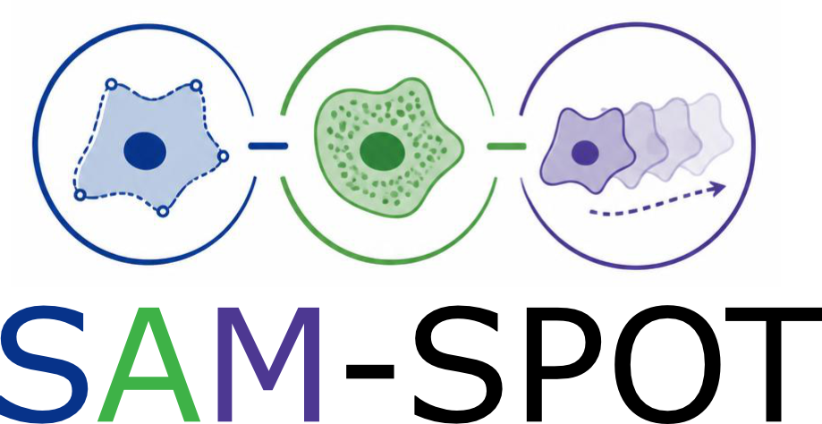
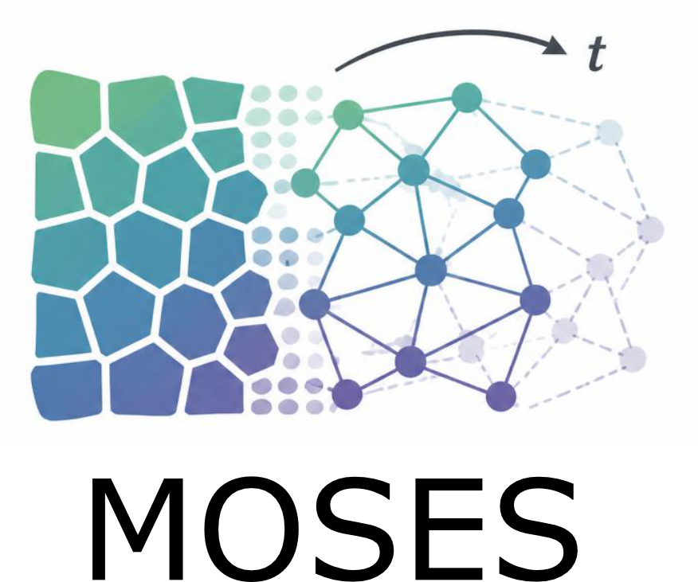
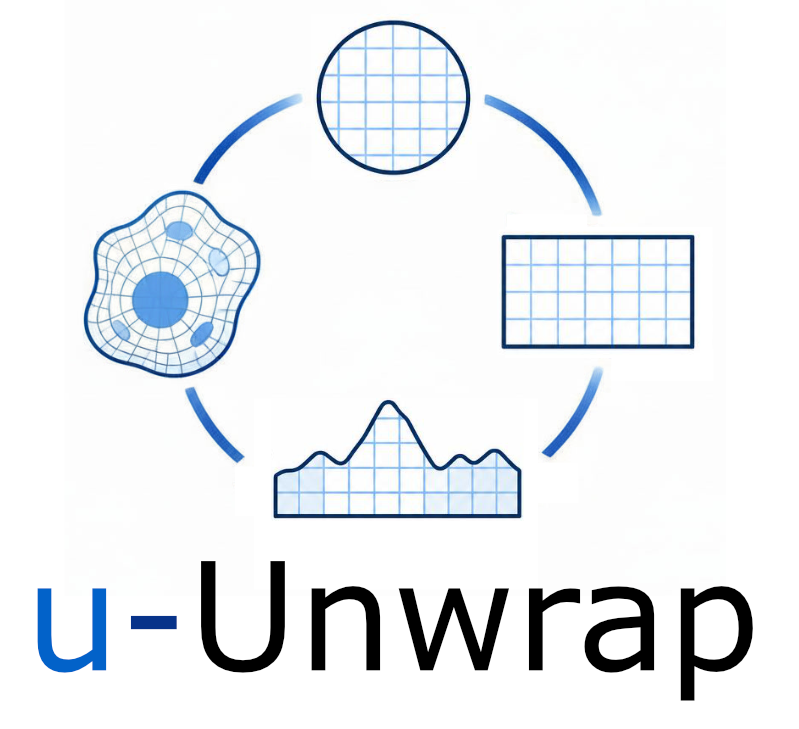
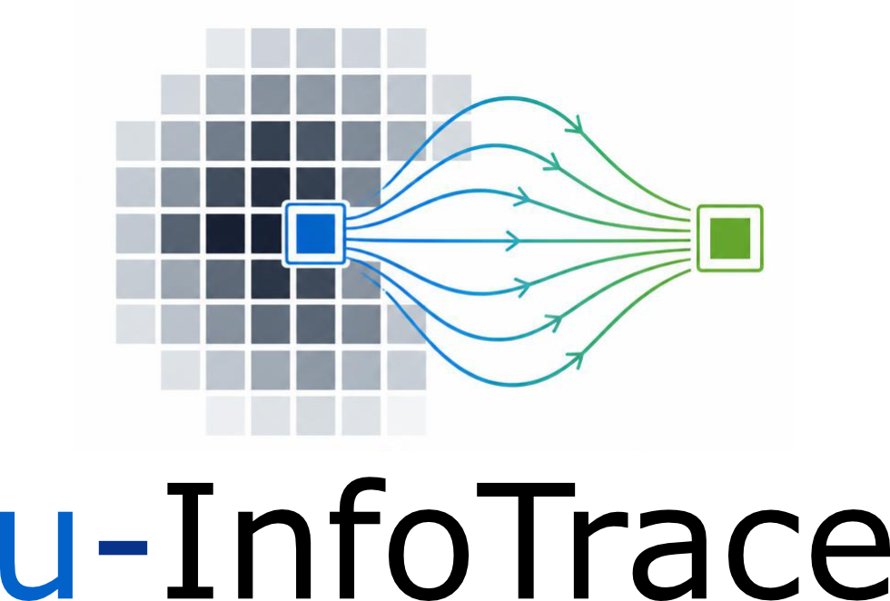
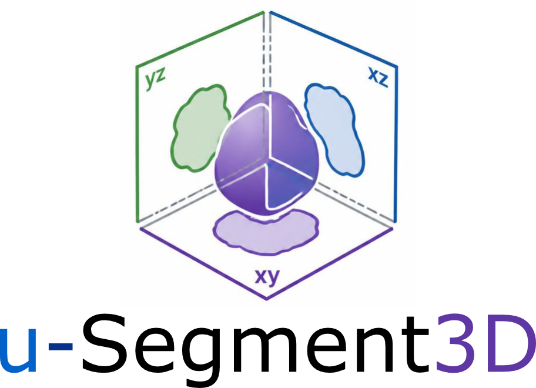
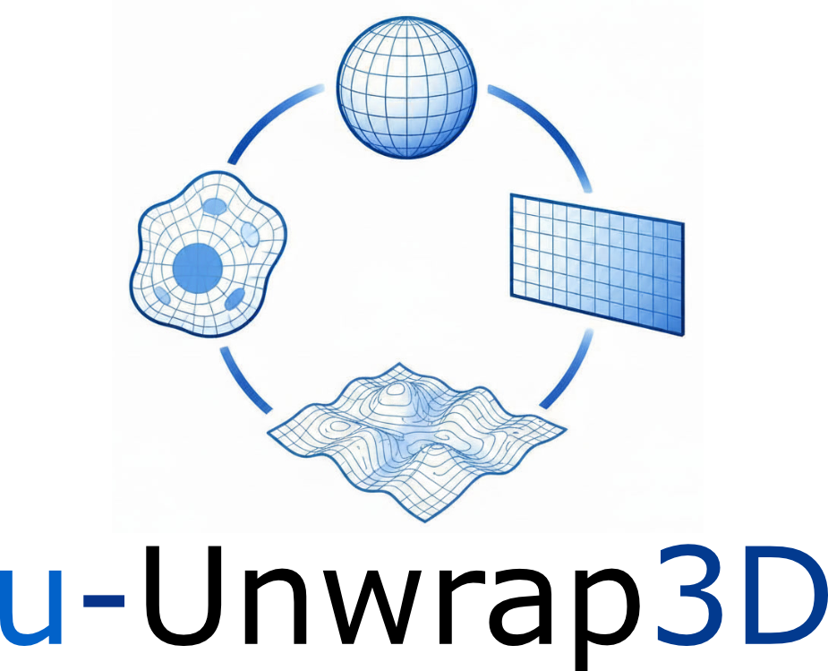

Quantitative Cell Phenomics & Motion Analysis
Frameworks for extracting, standardising, and comparing morphodynamic phenotypes from time-lapse microscopy.

A three-stage pipeline — video segmentation, SAM phenome computation, and unsupervised phenotype clustering — for characterising dynamic cells and organoids in time-lapse imaging. Supports automated segmentation with pretrained neural networks and enables interpretable cross-experiment phenotype comparison. Two companion papers cover 2D fixed/live-cell imaging and 3D organoid applications.
pip install SAM-SPOT

A superpixel-based optical-flow framework for quantifying and discovering collective motion phenotypes in time-lapse microscopy without requiring single-cell tracking. Constructs motion meshes and extracts boundary and flow statistics from live-cell image sequences. Validated on epithelial monolayer and cancer cell migration datasets.
pip install git+https://github.com/fyz11/MOSES.git

Maps complex and diverse 2D cell shapes to canonical disk and rectangular coordinate systems using conformal, equiareal, and equidistant parameterisation. Enables consistent spatiotemporal registration and population-level comparison of highly dynamic cell boundaries, facilitating machine-learning-ready representations of membrane-associated molecular signals.
pip install u-Unwrap

Computes multiscale pixel-to-pixel spatiotemporal information flows in 2D videos using formal causal measures, complementing optical flow with information-theoretic signal propagation analysis. Applicable across diverse biological phenomena including embryonic development and collective cell migration, as well as physical dynamical systems.
pip install git+https://github.com/DanuserLab/u-infotrace.git
3D Cell Imaging & Segmentation
Tools for robust 3D cell segmentation and surface-based morphological analysis from volumetric microscopy data.

Generates robust consensus 3D instance segmentations by intelligently merging 2D slice-by-slice predictions from orthogonal xy, xz, and yz views. Compatible with any 2D segmentation engine (e.g. Cellpose) and supports multiple distance transforms for flexible postprocessing. Published in Nature Methods 2025.
pip install u-Segment3D

Transforms 3D cell surface meshes into multiple canonical representations — topographic maps, spherical parameterisations, and unfolded 2D images — using conformalized mean curvature flow and harmonic distance transforms. Enables quantitative analysis of membrane-associated molecular signals co-localised with dynamic 3D cell morphology.
pip install u-Unwrap3D